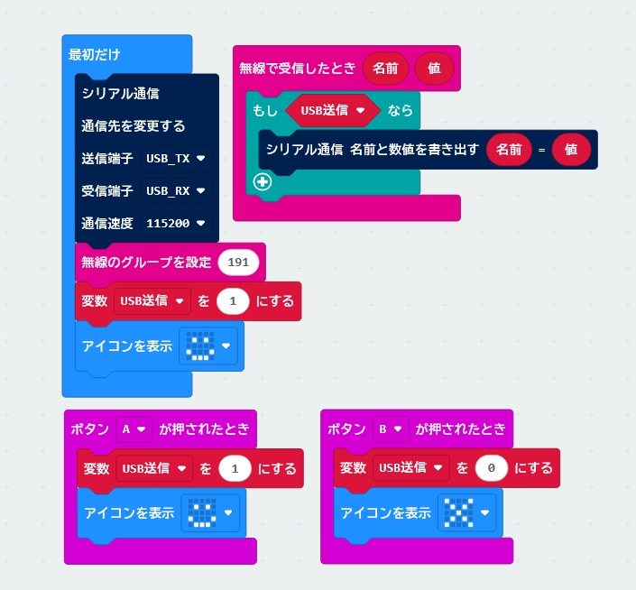

2 つの使い方
ブロックは Xcratch 版とデスクトップ版で共通です。
できること
つないだポートは「シリアル通信 1」〜「シリアル通信 8」の番号で区別します。 この番号は COM の番号とは関係ありません。 どのポートを何番にするかは、開始するときに出るダイアログで選びます。
micro:bit 2 台を同時につなぎ、それぞれから受信できることを、 Xcratch 版とデスクトップ版の両方で確認しています（3 台以上は確かめていません）。
使い方
- Chrome・Edge・Firefox のどれかで Xcratch を開きます。 （デスクトップ版は、Scratch Multi Serial を起動し、左下の「拡張機能を追加」から 「マルチシリアル接続」を選びます。手順 2 に進んでください。） 上の「Xcratch で開く」を押すと、拡張機能を読み込んだ状態で開きます。 自分で読み込むときは、Xcratch の「拡張機能を追加 → Extension Loader」に 次の URL を入れます。 https://tarosay.github.io/xcratch-multi-serial/multiserial.mjs
-
ブロックを組みます。 micro:bit 2 台から受け取る例です。
緑の旗が押されたとき シリアル通信 (1) を ボーレート (115200) で開始する シリアル通信 (2) を ボーレート (115200) で開始する シリアル通信 [1] で受け取ったとき 変数1 を ((シリアル通信 (1) の最新の行) の中の数値) にする シリアル通信 (1) の受信データを捨てる
- 緑の旗を押して、ダイアログで 1 台目を選びます。 続けて画面のどこかをクリックすると、2 台目のダイアログが出ます。
うまくいかないときは、シリアル通信 (1) の状態 を「言う」などで表示すると、
理由が分かります。
Scratch Multi Serial（デスクトップ版）
Scratch Desktop にマルチシリアル接続を組み込んだ版です（Windows）。 ブロックは Xcratch 版と同じものを共有していて、できることは変わりません。 ブラウザは要りません。
Releases
から入れられます。インストーラ（Scratch-MultiSerial-…-Setup.exe）と、
展開するだけで動く ZIP（…-portable.zip）の 2 つがあります。
ZIP は展開して、中の Scratch Multi Serial.exe を起動します。
公式の Scratch Desktop を入れていても上書きされません。 別のアプリとして入るので、並べて使えます。
起動したら、左下の「拡張機能を追加」から「マルチシリアル接続」を選びます。
違うのは、ポートを選ぶダイアログの見た目だけです。 ブラウザのダイアログの代わりに、ポートの名前を並べたダイアログが出ます。 使うポートをクリックしてください。
シリアルポートを選んでください com0com - serial port emulator (COM8) com0com - serial port emulator (COM9) キャンセル
- 「キャンセル」を押すか、ダイアログを閉じると、
状態は「選ばれませんでした」になります - ポートが 1 つも無いときは「シリアルポートが見つかりません」と出ます。機器をつないでから、もう一度開始してください
- ダイアログを開いている間にケーブルを挿しても、一覧には出ません。 「キャンセル」を押して、もう一度開始してください
Xcratch 版で保存した作品（.sb3）は、デスクトップ版でそのまま開けます。
micro:bit 2 台をつないで、そのまま動くことを確認しています。
ビルド方法は GitHub リポジトリ にあります。
micro:bit の側
MakeCode の シリアル通信 1行書き出す か
シリアル通信 名前と数値を書き出す で送ります。
名前と数値を書き出す で送った値は、
シリアル通信 (1) の [x] の値 で名前を指定して読めます。
送る間隔は 50 ミリ秒以上（1 秒に 20 回以下）を目安にしてください。 ボーレートは MakeCode の既定の 115200 です。
シリアル通信 で日本語を送ると、文字化けします。
英数字で送ってください。
参考: 無線で受け取った値を USB へ流すプログラム
micro:bit 側のプログラムの一例です。 ほかの micro:bit から無線（グループ 191）で受け取った名前と値を、 そのまま USB のシリアル通信へ書き出します。 A ボタンで書き出しを始め、B ボタンで止めます（起動したときは書き出す状態です）。

MakeCode で「読み込む → URL から読み込む」に次の URL を貼ると開けます。
https://github.com/tarosay/musen_com_kasikudo_1
必要なもの
- USB でつなぐシリアル機器（micro:bit など）と USB ケーブル
- Xcratch 版: Chrome・Edge、または Firefox 151 以降（パソコン版）。 Web Serial API を使います。Safari は対応していません（2026年10月時点）
- デスクトップ版: Windows。ブラウザは要りません。macOS / Linux 版はありません
それ以外に必要なものはありません。Xcratch 版はインストールもアカウントも不要です。
困ったとき
micro:bit をつないだまま Xcratch を閉じると、しばらくして micro:bit からの送信が 止まることがあります。 micro:bit の電源を切って入れ直すと戻ります。
受信中の番号で「開始する」が動いても、何もしません。 ボーレートを変えるときは、先に「終了する」を動かしてください。